Pas parce que les équipes travaillent mal, mais parce que les outils qu'elles utilisent n'ont pas été pensés pour ce métier. Résultat : du temps perdu chaque semaine, des informations qui se perdent, et une direction qui découvre les problèmes trop tard.
Deep Clean centralise ce qui se passait avant dans cinq outils différents, et l'adapte automatiquement à qui la consulte : un employé, un chef d'équipe, un superviseur, la RH ou la direction n'y voient jamais la même chose.
L'écran d'accueil se réorganise entièrement selon qui est connecté. Un employé voit sa mission du jour. Un chef d'équipe voit ses chantiers et son équipe. La direction voit l'activité de toute l'entreprise. Personne ne cherche l'information : elle est déjà là.
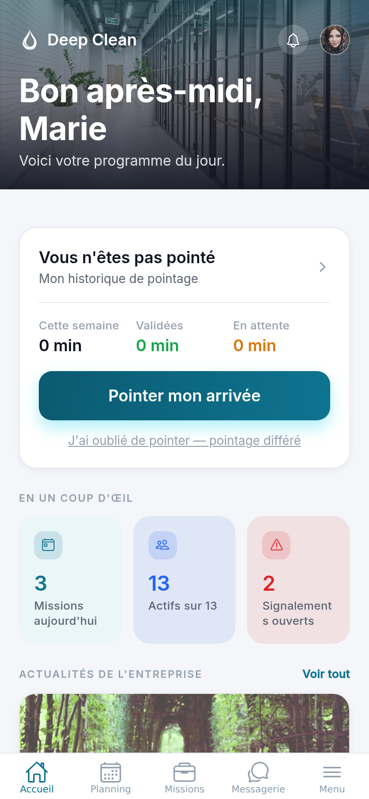
Le superviseur construit le planning de toute l'entreprise en quelques minutes : chantier, horaires, équipe et chef de mission. Dès qu'une mission change, les bonnes personnes, et seulement elles, sont prévenues instantanément.
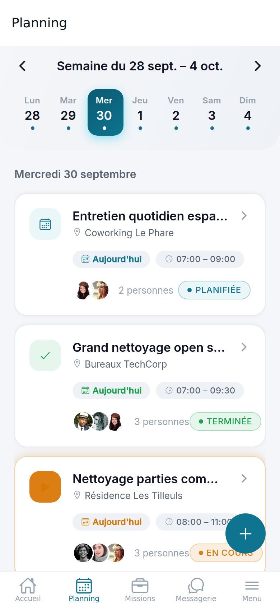
Chaque mission affiche la photo et le prénom de chaque personne affectée : plus besoin d'ouvrir le détail pour savoir qui est sur le chantier. Démarrer, terminer, ou signaler un problème se fait en quelques secondes, directement depuis le terrain.
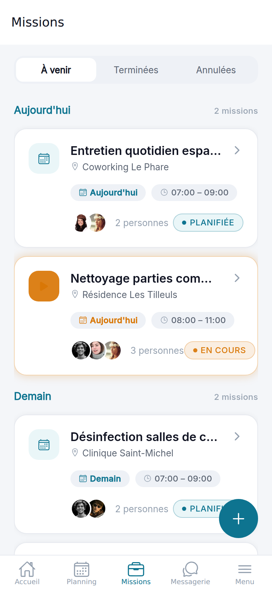
Chaque collaborateur peut écrire directement à n'importe quel collègue de l'entreprise, sans quitter l'application : plus de groupe WhatsApp externe à gérer, plus de messages de travail mélangés aux conversations personnelles.
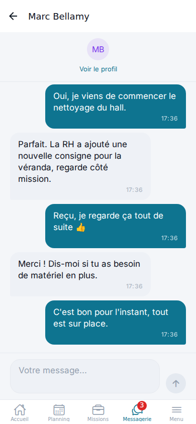
Aucun compte ne se crée seul. C'est la RH, et elle seule, qui ouvre un accès, attribue un rôle, ou le retire. Un départ, un souci d'accès, un mot de passe oublié : tout se règle en quelques secondes, sans jamais voir le mot de passe personnel de qui que ce soit.
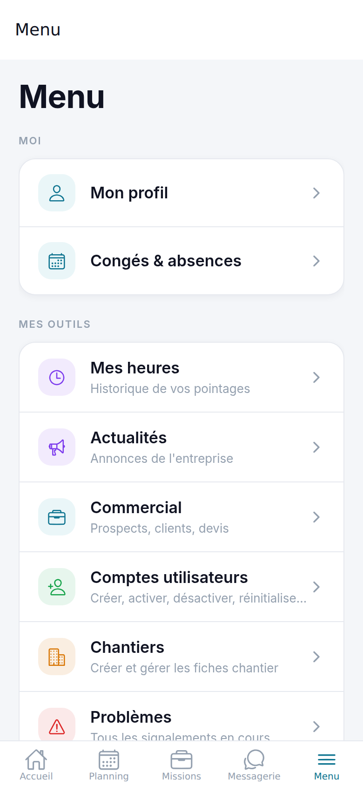
Chaque arrivée et départ pointés depuis le terrain sont suivis, validés puis exportés en un clic : la RH n'a plus jamais à ressaisir une seule ligne dans un tableur avant de les transmettre au logiciel de paie.
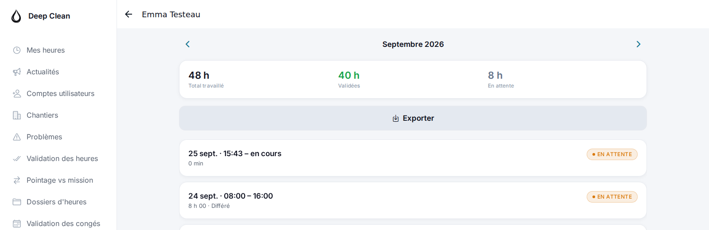
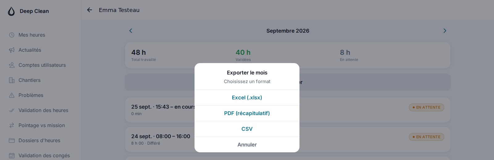
Dès sa première connexion, une visite guidée déplace elle-même la personne dans l'application et met en surbrillance les vrais boutons, les vrais écrans, jamais une simple image expliquée dans le vide. Le contenu s'adapte automatiquement à son rôle : un employé et une RH n'apprennent pas la même chose.
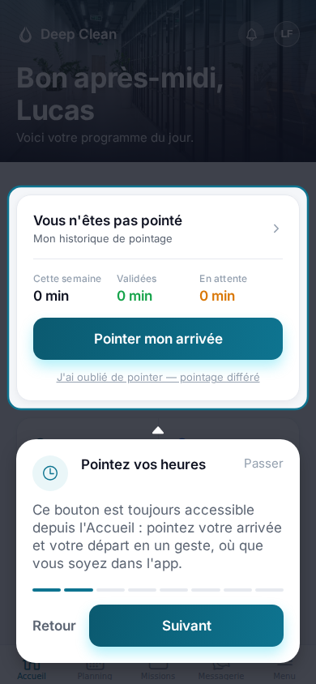
La RH, les superviseurs et la direction passent souvent leur journée derrière un ordinateur. Deep Clean s'y adapte automatiquement. Ici, le planning de la semaine : chaque personne à gauche, ses missions alignées jour par jour à droite. Un simple coup d'œil remplace le tableau Excel partagé par e-mail.
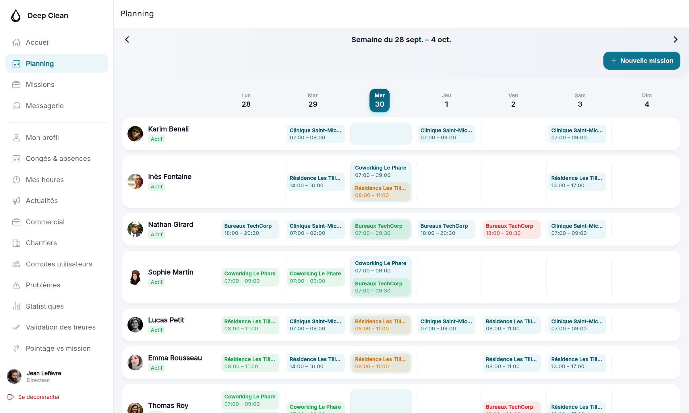
Deep Clean suit désormais toute l'activité commerciale : un prospect devient client en un tap, un devis se construit ligne par ligne avec calcul automatique, et son statut est suivi jusqu'à la signature — jamais dans un tableur à part, jamais sur papier.
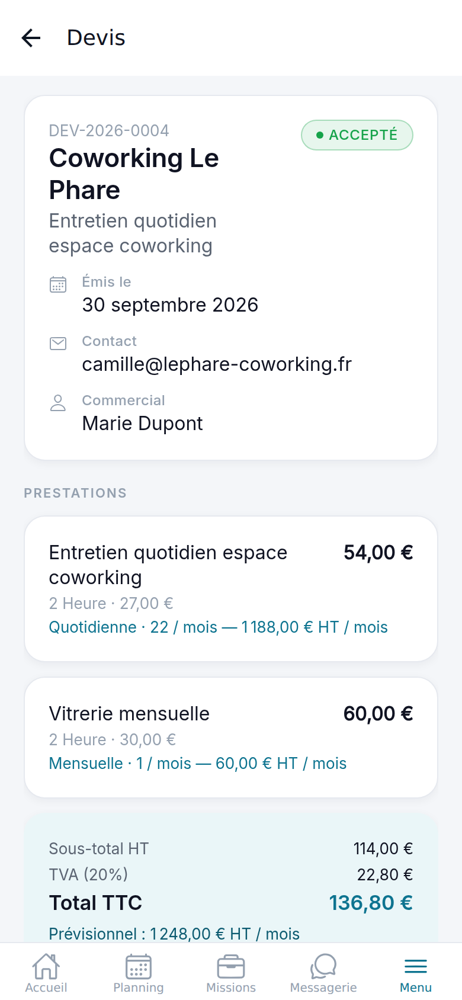
Le Superviseur peut créer et suivre ses propres prospects et devis, mais seuls la RH, la Direction et l'admin technique peuvent les valider ou établir une facture — exactement la même logique que pour la validation des pointages avant la paie.
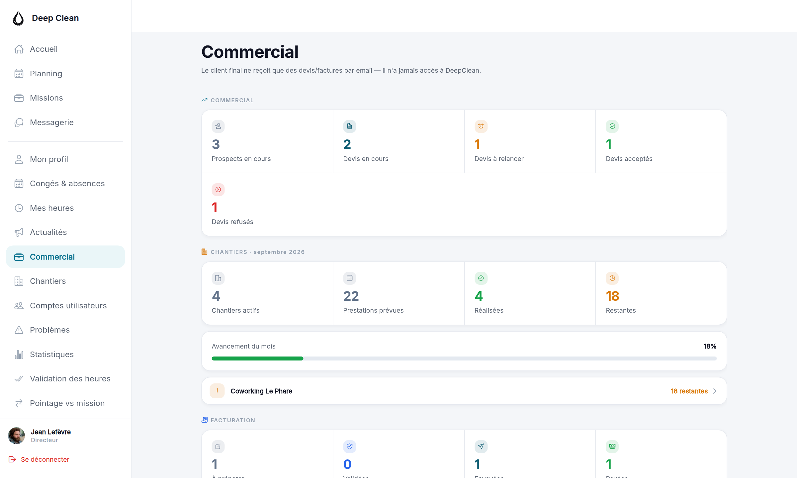
Six rôles, six espaces distincts, une seule application. Les permissions ne sont pas qu'une question d'affichage : elles sont vérifiées à chaque action, sur le serveur : un employé ne peut techniquement pas accéder aux données d'un collègue, même en essayant.
| Fonctionnalité | Employé | Chef d'équipe |
Superviseur | RH | Direction |
|---|---|---|---|---|---|
| Consulter son planning et ses missions | ✓ | ✓ | ✓ | ✓ | ✓ |
| Pointer ses heures | ✓ | ✓ | ✓ | ✓ | ✓ |
| Signaler un problème avec photo | ✓ | ✓ | ✓ | ✓ | ✓ |
| Démarrer / terminer une mission (suivi terrain) | – | ✓ | ✓ | ✓ | ✓ |
| Créer / modifier le planning de tous les chantiers | – | – | ✓ | ✓ | ✓ |
| Valider une mission terminée | – | • | ✓ | ✓ | ✓ |
| Approuver congés et absences | – | – | ✓ | ✓ | ✓ |
| Valider les pointages avant la paie | – | • | ✓ | ✓ | ✓ |
| Créer un compte utilisateur | – | – | – | ✓ | – |
| Gérer un compte existant (modifier, activer/désactiver, réinitialiser) | – | – | – | ✓ | ✓ |
| Gérer prospects, clients et devis (module commercial) | – | – | • | ✓ | ✓ |
| Valider un devis | – | – | – | ✓ | ✓ |
| Accéder à la facturation | – | – | – | ✓ | ✓ |
| Vue globale, statistiques de l'entreprise | – | – | • | • | ✓ |
| Journal d'activité de toute l'entreprise | – | – | – | ✓ | ✓ |
✓ accès complet · • accès partiel, limité à son propre périmètre (son chantier, sa mission) · – non applicable à ce rôle
Chaque personne se connecte, et retrouve exactement ce qui la concerne, jamais un écran générique à trier soi-même.
Deep Clean ne se contente pas d'être agréable à utiliser : elle retire des tâches entières du quotidien de vos équipes d'encadrement. Voici ce que ça change, semaine après semaine.
| Tâche | Avant | Avec Deep Clean | Temps gagné |
|---|---|---|---|
| Construire le planning de la semaine |
2 à 3h, souvent refait plusieurs fois par des allers-retours téléphoniques | Quelques minutes, conflits d'absence détectés automatiquement | ≈ 3h / semaine |
| Rassembler les pointages pour la paie |
Papier ressaisi à la main, erreurs fréquentes à corriger | Export en un clic, écarts déjà repérés automatiquement | 2 à 4h / paie |
| Retrouver un signalement et sa photo |
Fouiller dans des messages WhatsApp ou des e-mails | Historique complet, recherche immédiate, photo toujours attachée | Quasi immédiat |
| Former un nouvel employé | Explications à l'oral, erreurs fréquentes les premiers jours | Tutoriel guidé automatique, adapté à son rôle | Plusieurs heures / recrue |
| Réinitialiser un accès | Dépend de qui est disponible, parfois plusieurs heures d'attente | La RH le fait elle-même, en quelques secondes | Immédiat |
| Avoir une vue d'ensemble de l'entreprise |
Appels téléphoniques, rapports de fin de mois | Tableau de bord en temps réel, à tout moment | Continu |
La sécurité n'a pas été ajoutée à la fin : elle fait partie de chaque ligne de code, dès le premier jour. Voici ce qui protège concrètement votre entreprise et vos employés.
Chaque brique a été choisie pour sa fiabilité et sa longévité, pas pour aller vite au détriment de la solidité. Voici ce qui fait tourner Deep Clean, en langage clair.
Autour de cette base, les mêmes exigences que sur toutes les autres pages de ce document :
Une dernière relecture, une validation de votre part, et Deep Clean accompagne vos équipes dès la semaine prochaine.